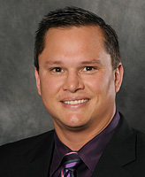

The Test Kitchen Ventures team is comprised of top Kellogg MBA students from diverse backgrounds.
Development Team
Noah Bleicher
Noah graduated from the University of Southern California in 2005 with a Bachelor’s degree in Economics. He has worked in many capacities but most recently he was the co-founder and operator of Su Casa Colombia, the top-rated bed & breakfast in Medellin, Colombia. He has a passion for social enterprises, building and cultivating company culture, and all ranges of the hospitality industry. Currently and upon graduating from Kellogg, Noah is starting a quick-service restaurant concept focused on fresh and healthy Asian-inspired meals.

Jessica Callahan
Jessie is a MBA and Masters in Engineering candidate at the Kellogg School of Management and McCormick school of Engineering. Prior to Kellogg, Jessie spent 3 years working in a business development role at Tribeca Enterprises, the holding company of the Tribeca Film Festival. This past summer, Jessie interned at Amazon, where she focused on creating a marketing strategy for Amazon’s sport equipment category. Jessie graduated from the University of Michigan with a focus on History and Film Studies, and post college participated in the Teach For America program as a founding 1st grade teacher at a charter school in Brooklyn, NY.

Evan Dadosky
Evan graduated from the United States Air Force Academy in 2008 and was commissioned as a 2nd Lieutenant in the United States Air Force. He served as an acquisitions officer at Hanscom AFB, MA where he served as a program manager on several Air Force communication platforms. This past summer he interned at the Civic Consulting Alliance where he worked with the Chicago Mayor’s office to devise a strategic plan for a new citywide cradle-to-career educational initiative. After graduation, Evan will join Bain & Co.’s Chicago office.

Michelle Hirsch
Michelle graduated from Washington University in 2009, focusing on Economics, Marketing and American Cultural Studies. Prior to Kellogg, Michelle worked for HSBC in Global Equities Operations and as an Analyst in the FIG group.
Eugene Kim
Eugene graduated from the Richard Ivey School of Business with a Bachelors of Business Administration in 2007. Prior to attending Kellogg, he spent almost six years in investment banking focusing on a variety of industries, including real estate, energy and financial services. This past summer, Eugene interned for Deloitte Consulting in Chicago, where he worked with a CPG company on evaluating its go-to-market strategies in international markets. Upon graduating, Eugene will be working full-time for Bain & Co. in its Toronto office.
Basil Merriman
Basil graduated from Washington University in 2006, focusing on BSBA and Finance. Prior to Kellogg, Basil worked as a Fixed Income Analyst for TIAA-CREF.
Advisor
